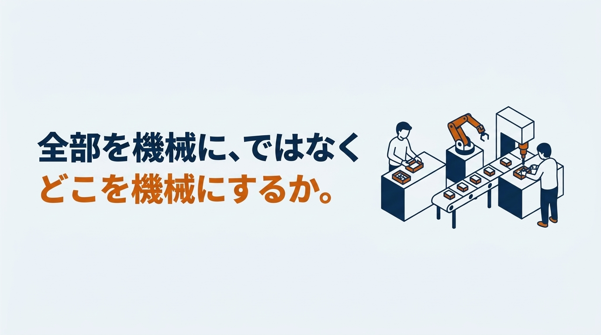
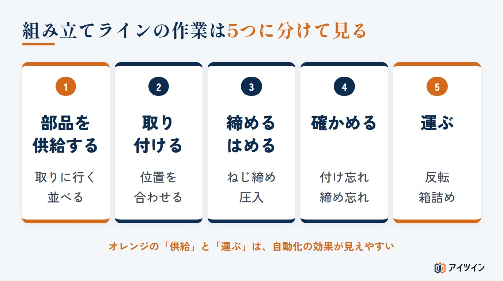
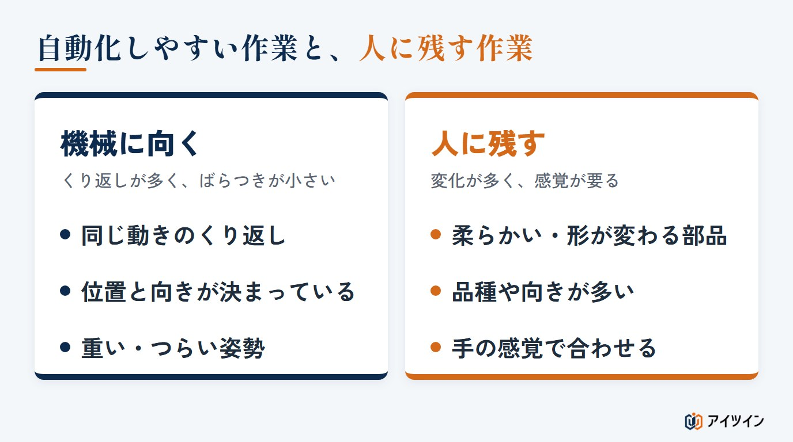
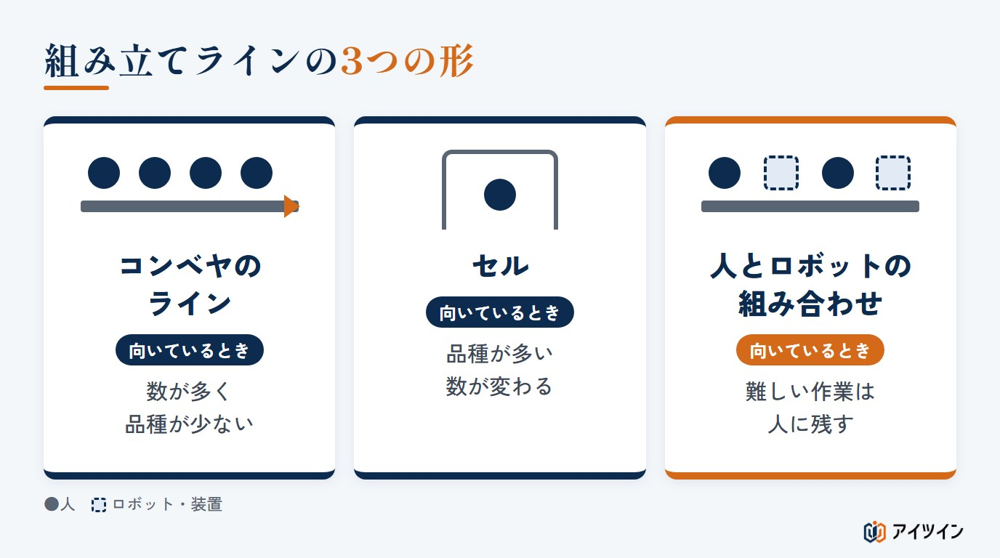
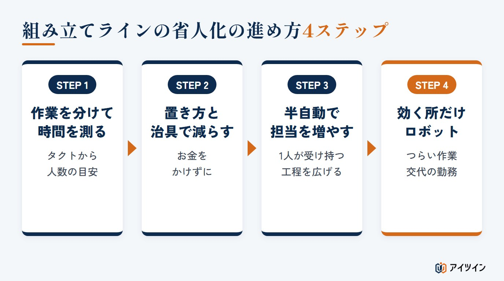
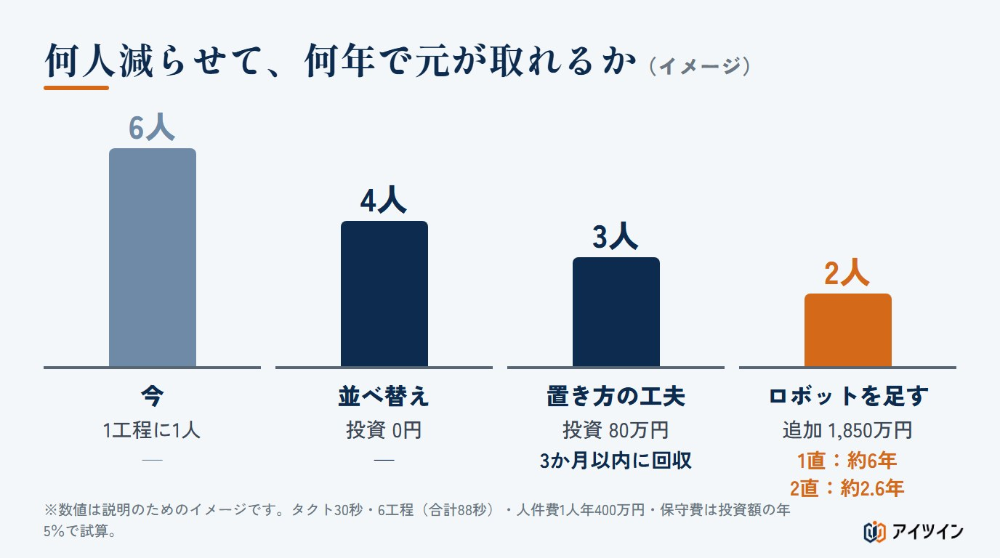
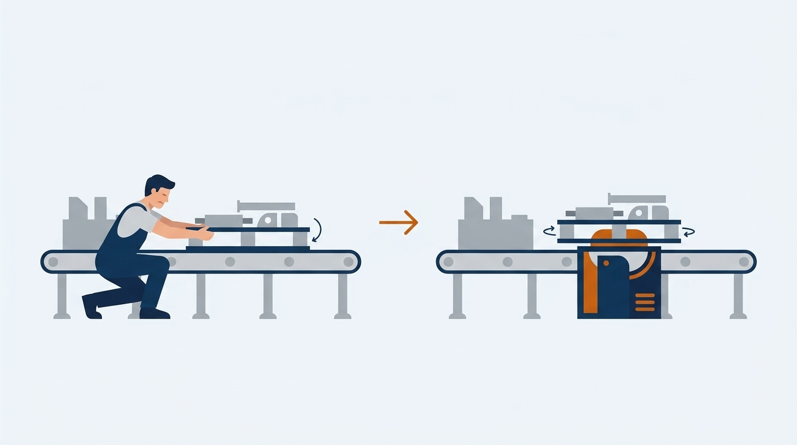
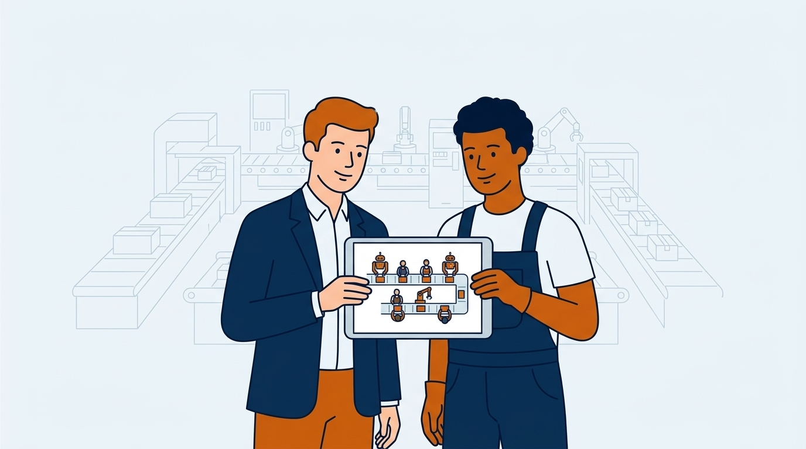

「組み立てラインの人が集まらず、今いる人に負担が寄っている」「ロボットを入れたいが、どの工程から手をつければよいのか分からない」。組み立ての現場で、こうした声をよく聞きます。
本記事では、組み立てラインの省人化の進め方を、作業の分け方、自動化しやすい作業の見極め方、ラインの形、段階的な進め方、人数と回収年数の試算の順に解説します。後半では、搬送装置の機械設計に携わってきた立場から、実際の自動化で起きたつまずきもご紹介します。
この記事でわかること
- 組み立てラインの作業の分け方と、自動化しやすい作業・難しい作業の見極め方
- ラインの形の選び方と、治具 → 半自動 → ロボットの段階的な進め方
- 何人減らせて何年で元が取れるかの試算（計算ツールつき）と、よくある失敗
組み立てラインの省人化とは｜省力化との違いと、求められる理由
省人化は「人の数」を、省力化は「人の負担」を減らす
2つの言葉の使い方は資料によって幅があるため、本記事では次のように使います。省人化は、同じ生産量と品質を保ちながら、必要な作業の人数を減らすこと。省力化は、人数を変えずに、作業の時間や体と気持ちの負担を減らすことです。部品を取りに歩く距離を短くするのは省力化で、その結果ラインの人数が減れば省人化にもつながります。
つまり、2つは別々のものではなく、省力化を積み重ねた先に、省人化があると考えると分かりやすくなります。作業を軽くした結果として人数を減らす順番のほうが、現場の納得も得やすくなります（参考：「省人化ではなく省力化を。製造現場の負担を軽くする第一歩とは」）。
組み立てラインで省人化が求められる3つの理由
理由は大きく3つです。1つ目は、くり返しや立ちっぱなしの作業が多く、人が集まりにくいこと。2つ目は、夜勤を含む2直・3直のラインでは1つの持ち場に何人もの担当が要り、欠員が出るとすぐに回らなくなること。3つ目は、締め忘れや付け間違いが、人の注意だけでは防ぎきれないことです。
人を減らす前に、つらい作業から減らす
「何人減らせるか」が先に話題になりがちですが、最初に効くのは、しゃがむ、腕を伸ばす、重い物を持ち上げるといった、体に負担がかかる作業を減らすことです。ケガや腰痛の原因になり、人が辞める理由にもなるからです。つらい作業を機械に任せると、人数が減るだけでなく、残る人が長く働けるラインになります。
この章のまとめ
- 省人化は人の数、省力化は人の負担を減らすこと。省力化の先に省人化がある
- 人が集まらない、交代の勤務が回らない、品質がばらつく、の3つが理由
- 人数より先に、体に負担がかかるつらい作業から減らす
組み立てラインの作業を、5つに分けて見る
「組み立て」の中には性質の違う作業が混ざっているため、まず作業を分けて見ます。おおむね次の5つに分けられます。

部品を供給する（取りに行く・並べる・向きをそろえる）
部品を棚から取る、使う順に並べる、向きをそろえる作業です。付加価値を生まないのに、全体の時間のかなりの割合を占めていることがあります。置き場所を変える、傾けた棚で手元まで流す、といった工夫だけで減らせる場合も多い作業です。
取り付ける・組み付ける
部品を正しい位置に置き、ほかの部品と合わせる作業です。組み立ての中心ですが、部品が柔らかい、すき間が小さい、手の感覚で位置を合わせている、といった場合は、機械に置き換えるのが難しくなります。
締める・はめる（ねじ締め・圧入・かしめ）
ねじを締める、部品を押し込む、かしめる、といった作業です。ねじや部品の位置と向きを安定させられれば、機械にしやすい作業で、締め付けの力や押し込んだ深さも記録できます。ただし、ねじの供給と整列、斜め入りやかじり、軸と穴のずれへの対策は必要です。
確かめる（検査）
付け忘れ、締め忘れ、向きの間違いなどを確かめる作業です。目で見ている場合は、人や時間帯によって見落としが出ます。カメラやセンサーで確かめる場合は、何を「良」とするかの基準を先に決めておきます。
運ぶ（工程の間の搬送・反転・箱詰め）
製品を次の工程へ渡す、裏返す、箱に詰める作業です。重い物を扱う、しゃがむなど、体に負担がかかる作業が集まりやすい分類です。自動化の効果が見えやすいのは、組み立ての中心よりも、その前後の「供給」と「運ぶ」であることが多いのです。
この章のまとめ
- 組み立てラインの作業は、供給・取り付け・締める・確かめる・運ぶの5つに分けて見る
- 締める作業は、位置と向きを安定させられれば機械にしやすい。取り付けは条件によって難しい
- 効果が見えやすいのは、組み立ての前後の「供給」と「運ぶ」
自動化しやすい作業と、難しい作業の見極め方
判断の目安は、作業の「くり返しの度合い」と「ばらつきの大きさ」です。

自動化しやすい作業｜同じ動きのくり返し・位置が決まっている・つらい姿勢
毎回同じ動きをくり返す作業や、部品の位置と向きを安定させられる作業は、自動化の対象になりやすい作業です。条件がそろえば、ねじ締め、圧入、部品の受け渡し、製品の反転や箱詰めなどがこれにあたります。重い物を持ち上げる、しゃがんで手を伸ばすといったつらい姿勢の作業も、機械に任せる効果が大きい作業です。
自動化が難しい作業｜柔らかい部品・品種が多い・手の感覚で合わせる
反対に、配線やチューブのように柔らかく形が変わる部品を扱う作業や、手の感覚で位置を合わせる作業は、自動化の難しさが上がる傾向があります。専用のハンドやセンサーを工夫すればできる場合もありますが、装置が複雑になって費用がかさみ、動きも人より遅くなりがちです。品種が多い作業も、品種ごとの手順や部品の形、段取り替えの違いが大きいほど、難しさと設備の費用が増えます。こうした作業は、無理に機械にせず、人に残すほうが現実的な場合が多くあります。
優先するのは「つらい作業」「夜の作業」「ミスが起きやすい作業」
機械に向く作業が見つかったら、優先順位を決めます。優先したいのは、体に負担がかかる作業、夜勤など交代の勤務がある作業、ミスが品質の問題につながりやすい作業です。交代の勤務がある工程は、1か所を機械にすると、直の数だけ人の手当てが要らなくなるため、同じ投資でも効果が大きくなります。
この章のまとめ
- くり返しが多く、位置や向きを安定させられる作業は機械に向きやすい
- 柔らかい部品、品種の違いが大きい作業、手の感覚が要る作業は、人に残すほうが現実的な場合が多い
- つらい作業、交代の勤務がある作業、ミスが起きやすい作業から優先する
組み立てラインの形を選ぶ｜コンベヤのライン・セル・人とロボットの組み合わせ
省人化では、工程ごとの機械化だけでなく、ラインの形そのものを見直すことも効果があります。代表的な形は次の3つです。

コンベヤで流すライン｜数が多く、品種が少ないとき
工程ごとに持ち場を分け、製品をコンベヤで流す形です。品種や工程が安定していて、作る数が多い製品に向きやすい形です。複数の品種を混ぜて流す（混流）ラインもあります。作業を覚えやすい反面、いちばん遅い工程にライン全体の速さが引っぱられます。人数を減らすには、工程ごとの時間をそろえ、1人の受け持ちを増やしていきます。工程ごとの時間のそろえ方は、「タクトタイムとは？計算方法と計算例」で解説しています。
セル（1人〜数人で組み上げる）｜品種が多いとき
1人、または数人が、部品の取り付けから検査までをまとめて受け持つ形です。品種の切り替えや作る数の変化に対応しやすい反面、覚える作業が多く、慣れるまでに時間がかかります。どちらの形が合うかは、品種の数、作る数、作業の内容、段取りの時間、設備にかけられる費用を合わせて決めます。セルの中の供給や検査だけを機械にする組み合わせもよく使われます。
人とロボットを組み合わせる｜難しい作業は人に残す
機械に向く作業は装置に任せ、難しい作業は人に残す形です。組み立てラインの省人化では、全部を機械にするより、人と機械の分担を決めるほうが成功しやすいと考えています。人の近くでロボットを動かす場合は、ハンド、つかむ物、周りの設備まで含めて危険を洗い出す「リスクアセスメント」を行い、安全対策を設計の段階から決めておきます。労働安全衛生規則（第150条の4）では、産業用ロボットとの接触で危険が生じるおそれがあるときは、柵や囲いを設けるなどの措置が求められます。人と同じ空間で動かす協働の運転では、人の接近を検知するセンサー、速度や力の制限、保護停止などを組み合わせ、柵を設けない構成にできる場合もあります。
この章のまとめ
- 数が多く品種が少ないならコンベヤのライン、品種が多いならセルが向く
- コンベヤのラインは、いちばん遅い工程に全体の速さが引っぱられる
- 難しい作業は人に残し、人と機械の分担を決めるほうが成功しやすい
組み立てラインの省人化の進め方4ステップ
お金のかからない工夫から積み上げていくのがおすすめです。

STEP1：作業を分けて、時間を測る
まず、2章の5つの分類で作業を書き出し、それぞれに何秒かかっているかを測ります。あわせて、1個を何秒で作ればよいかの目安（タクトタイム）を出しておきます。作業の時間の合計をタクトタイムで割って切り上げると、理論上の人数の下限が分かります。実際の受け持ちは、作業の順番の決まり（先にしないとできない作業）、分けられない作業、設備や工具の位置、作業者の技能を考えて割り振り、現場で動かして時間と動線を確かめながら調整します。
STEP2：部品の置き方や治具を工夫して、ムダを減らす
部品を手の届く位置に置く、取り出しやすい向きに並べる、位置決めの治具を作るなど、お金をあまりかけずに作業の時間を減らします。この段階で減らせる時間は、思っている以上に大きいことがあります。歩く、探す、持ち替える時間は、測って初めて気づくことが多いからです。
STEP3：半自動にして、1人が受け持てる範囲を広げる
ねじ締めの機械、押し込むための簡単なプレス、合否を知らせる検査の治具など、人が操作する半自動の装置を入れます。1つの作業の時間が短くなると、1人が受け持てる作業が増え、人数が減ります。ロボットより費用が小さく、品種が変わっても使い回しやすいのが利点です。
STEP4：効果が見込める所だけ、ロボットや専用の装置にする
最後に、ここまでで残った作業のうち、つらい作業や、交代の勤務がある作業など、効果が大きい所だけをロボットや専用の装置にします。ロボットは本体のほかに、手先の道具や安全対策、据え付け、調整の費用もかかります。内訳は「搬送作業の省人化、参考値は1,000万円〜2,000万円」が参考になります。国の補助金を使える場合もあります（「中小企業省力化投資補助金の解説」）。
この章のまとめ
- 作業を分けて時間を測り、タクトタイムから必要な人数の目安を出す
- 置き方・治具 → 半自動 → ロボットの順に、お金のかからない工夫から積み上げる
- ロボットは、つらい作業や交代の勤務がある作業など、効果が大きい所に絞る
何人減らせて、何年で元が取れるか｜試算の考え方
6工程の組み立てラインを例に、人数と回収年数を試算します。数字はすべて説明のための例です。
人数は「作業の時間の合計」と「タクトタイム」で決まる
例のラインは、部品をそろえる14秒、組み付ける18秒、ねじを締める16秒、圧入する12秒、確かめる15秒、箱に詰める13秒の6工程で、合計は88秒です。1個を30秒で作る必要があるとします。今は1工程に1人ずつ、6人で回しています。
88秒を30秒で割ると約2.9なので、理論上の下限は3人です。ただし、この例では作業の順番を変えられないとして前から順に分けると、30秒に収まる分け方は4人（14秒／18秒／16＋12秒／15＋13秒）になります。お金をかけずに、受け持ちを並べ替えるだけで6人から4人になる計算です。

次に、部品をそろえる作業を、手元まで部品が流れてくる棚で8秒に縮めます（費用は80万円とします）。すると、8＋18秒／16＋12秒／15＋13秒の3人で回せるようになります。さらに、ねじ締めをロボットにし、圧入と検査を半自動にすると（追加で1,850万円）、2人になります。
回収年数は「投資額 ÷ 年間の効果」
回収年数は、投資額を年間の効果で割った簡易な目安です。年間の効果には、実際に減る費用（人件費、残業代、外注費など）と、増産で増える利益を入れ、保守費、消耗品、電気代などの増える費用を引きます。ここでは人件費を1人年400万円、増える費用を保守費として投資額の年5％とします。棚の工夫は、1人減って年400万円の削減に対し、投資は80万円なので、3か月かからずに元が取れます。一方、2人目を減らすロボットの追加分は、1,850万円の投資に対して年間の効果が約310万円（400万円 − 保守費約90万円）で、回収に約6年かかります。
同じラインを2直で動かしているなら、減る人数は直の数だけ増えます。2直なら年間の効果は約710万円になり、回収は約2.6年に縮まります。最後の1人を減らすほど費用は大きくなり、元が取れるかどうかは直の数で大きく変わることが分かります。なお、減った人が別の作業に移るだけで給与などの支出が変わらなければ、人件費の削減にはなりません。その人が残業や外注を減らす、増産につながるといった場合は、その分を別の効果として数えます。設備の使える年数や税金、回収後の効果も合わせて判断します。
自分の条件で試す｜省人化の回収年数の計算ツール
初期値は、上の例のロボットの追加分（1直）です。直の数を2直に変えて、回収年数がどう変わるかを確かめてみてください。
省人化の回収年数の試算
年間の削減額は「減る人数 × 直の数 × 1人あたりの年間人件費」、回収年数は「投資額 ÷（年間の削減額 − 年間の保守費）」で概算します。1人あたりの年間人件費には、給与のほかに、会社が負担する社会保険料なども含めた金額を入れてください。減った人が別の作業に移るだけで、給与などの支出が変わらない場合は、人件費の削減になりません。残業や外注を減らせる場合、増産できる場合は、その効果も別に考えてください。電気代、消耗品、設計の変更、止まったときの損失、税金や補助金は含めていません。結果は目安で、投資の判断を保証するものではありません。
1日の直の数（交代の数）
結果
| 年間の削減額 | 万円 |
|---|---|
| 年間の効果（削減額 − 保守費） | 万円 |
| 回収年数 | |
| 5年間の差し引き | 万円 |
この章のまとめ
- 人数は、作業の時間の合計とタクトタイム、受け持ちの分け方で決まる
- 安い工夫で減る1人と、ロボットで減らす最後の1人では、回収年数が大きく違う
- 交代の勤務があるラインほど、同じ投資でも早く元が取れる
組み立てラインの省人化でよくある4つの失敗
よく見られる失敗と、その防ぎ方をまとめます。
失敗1：減らした人が、別の作業に回っただけ
ラインの人数は減ったものの、その人が装置の見守りや部品の補充に回り、ほかの効果も生まれなかった、という例です。空いた人にどの仕事をしてもらい、どんな効果（残業や外注の削減、増産）を出すのか、装置の見守りや補充の手間はどれだけかを、入れる前に決めておきます。
失敗2：装置が止まると、誰も直せない
装置が止まったときに現場で原因が分からず、メーカーの到着までラインが止まる例です。夜勤の時間帯なら、朝まで戻せないこともあります。止まったときに、どこを見て、どう戻すかを、設計の段階から決めておくことが大切です。点検しやすい配置など、保全の目線が省人化の効果を左右します。
失敗3：図面と現場の寸法が違い、据え付けでやり直しになる
既存のラインに装置を足すときは、元の図面をもとに設計しがちですが、長年の改造や修理で、現場の寸法が図面と違っていることがあります。据え付けの段階で気づくと、装置や現場の手直しが必要になり、費用も日程も大きく狂います。設計に入る前に、現場の寸法を実際に測って確かめることが、いちばん確実な防ぎ方です。
失敗4：品種が増えて、装置が使えなくなる
専用に作った装置が、新しい品種で使えなくなる例です。品種の増え方を見込み、治具の交換で対応できる作りにする、半自動にとどめるといった判断が必要です。
この章のまとめ
- 空いた人の仕事と、装置の見守りの手間を、入れる前に決めておく
- 止まったときの戻し方と点検のしやすさを、設計の段階から考える
- 設計の前に現場の寸法を測る。品種が増えたときの使い方も見込む
設計者の目線から｜パレットの反転作業を自動化した例
搬送装置の機械設計に携わった立場から、組み立てラインの一部を自動化した例をご紹介します（内容は一部ぼかしています）。

しゃがんで腕を伸ばす反転の作業を、昼と夜の2直で人が行っていた
あるラインでは、部品を載せたパレットを、途中で180度回す作業を人が行っていました。パレットの位置が低く、作業者はしゃがんだうえで腕を伸ばさないと届きません。パレットには、勝手に回らないための止め具が付いていて、毎回それを外し、手で180度回し、また止め具を掛け直します。あわせて、部品の数を目で確かめます。これを3つのパレットで行っていました。
この作業のために、昼と夜の2直で1人ずつ、計2人がついていました。この反転の作業をすべて装置に置き換え、2人がついていた作業を、0人にしました。つらい姿勢の作業と、交代の勤務がある作業という、3章で挙げた優先度の高い条件が両方そろった工程でした。
重さも重心も違うパレットを、決まった空間で回す
苦労したのは、2つの条件の両立です。1つは、反転の装置を既存のラインの決まった空間に収めること。もう1つは、パレットと部品の重さが品種ごとに違い、重心の位置も変わることです。どの重さ、どの重心でも、パレットを落とさず、決まった位置で確実に止められる機構にする必要がありました。
図面を信じて設計し、現場の寸法でつまずいた
いちばんの反省点は、7章の失敗3そのものです。元の図面を信じて設計しましたが、現地で測ると寸法が違っており、急いで現場の設備を図面どおりに直す工事が必要になりました。この経験から、設計に入る前に現場を測ること、装置が決まった空間の中でどう動くかを、作る前に確かめておくことの大切さを痛感しました。
この章のまとめ
- つらい姿勢で、2直の勤務がある反転の作業を自動化し、2人を0人にした
- 重さと重心が変わる条件と、限られた空間を、設計の最初に決める必要があった
- 図面と現場の寸法が違っていた。設計の前に測り、作る前に動きを確かめる
アイツインの組み立てラインの省人化の支援
アイツインは、搬送装置の機械設計と、現場の保全の経験をもとに、組み立てラインの省人化を「作る前に試す」進め方で支援しています。

作る前に、ラインの動きと人数を画面で確かめる
どの工程を人に残し、どこを機械にすると何人で回るのかを、装置を作る前に画面の上で確かめ、投資額と回収年数の目安も整理します。現場をデジタル上で再現する方法を使い、大きな投資で失敗するリスクを抑えます。
設計の前に、現場の寸法を測ってデータにする
図面だけに頼らず、現場を測ってデータにしてから設計に入ります。装置が空間に収まるか、周りの設備とぶつからないかを、据え付けの前に確かめられます。
止まりにくく、直しやすい装置を設計する
保全の経験から、止まったときに原因を確かめやすく、点検しやすい作りの装置を設計します。装置をのせる架台の強度計算や、図面の作成もお受けしています。計算の考え方は「自動化設備の設計ノート」でも公開しています。
まとめ
本記事では、組み立てラインの省人化の進め方を、作業の分け方から試算、よくある失敗まで解説しました。
作業を分けて時間を測り、受け持ちを並べ替え、置き方や治具を工夫し、それでも残ったつらい作業や交代の勤務がある作業だけを機械にする。組み立てラインの省人化は、お金のかからない工夫から順に積み上げるほど、元が取りやすくなります。まずは、自社のラインの作業を5つに分けて、時間を測るところから始めてみてください。
参考
・労働安全衛生規則（e-Gov法令検索）
・本記事の試算の数字は、説明のための例です。実際の設備の安全性や、法令への適合を確かめるものではありません。